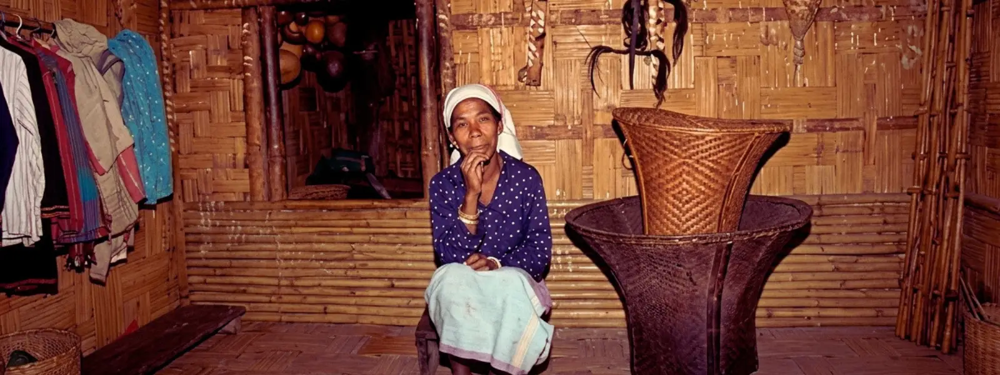

CHATCHI, MA.CHONG AND MAHARI
An Analysis of Garo Tribal Lineage and Relationships
Garo society is matrilineal. Within this social system, internal relationships are primarily divided into three categories or subgroups: Chatchi (or Katchi), Ma.chong and Mahari. These relationships hold such significance in the life of a Garo individual that their roots can be said to be embedded deep within the very soul of the community.

Regardless of their status, Garos feel both comfortable and immensely proud to identify themselves through their respective groups or subgroups, as this identity is considered a maternal legacy. These group and subgroup affiliations serve as a crucial determinant in the practice of exogamy (marriage outside one's own group) prevalent in matrilineal Garo society. . Consequently, for generations, this legacy of relationships has played a direct or indirect role in establishing marital ties, determining inheritance, fulfilling social obligations, and adhering to—or influencing—various religious and social norms, laws, and customs.
Chatchi, Ma.chong and Mahari represent a three-tiered system of relationships, with each possessing distinct meanings, characteristics, and significance. However, it is often observed that the general public conflates these three terms, treating them as synonymous. Such confusion arises primarily from semantic ambiguity; therefore, it is essential to understand and present these concepts accurately. A detailed discussion follows below.
CHATCHI (OR KATCHI) AND ITS ORIGIN
In this article, the term Chatchi (or Katchi) is translated into Bengali as Gotra (Clan). It is worth noting that in the book The Garos, Major A. Playfair referred to the Chtchi as Katchi. A Chatchi is a larger group comprising numerous smaller sub-clans. Garo society primarily consists of five Clans or Chatchi, these are: Sangma, Marak, Momin, Shira, and Areng. Various Ma.chong (lineages) are included as members under these five Chatchi
add photo + caption later
Sources
- Source placeholder — add a real citation here
- Source placeholder — add a real citation here